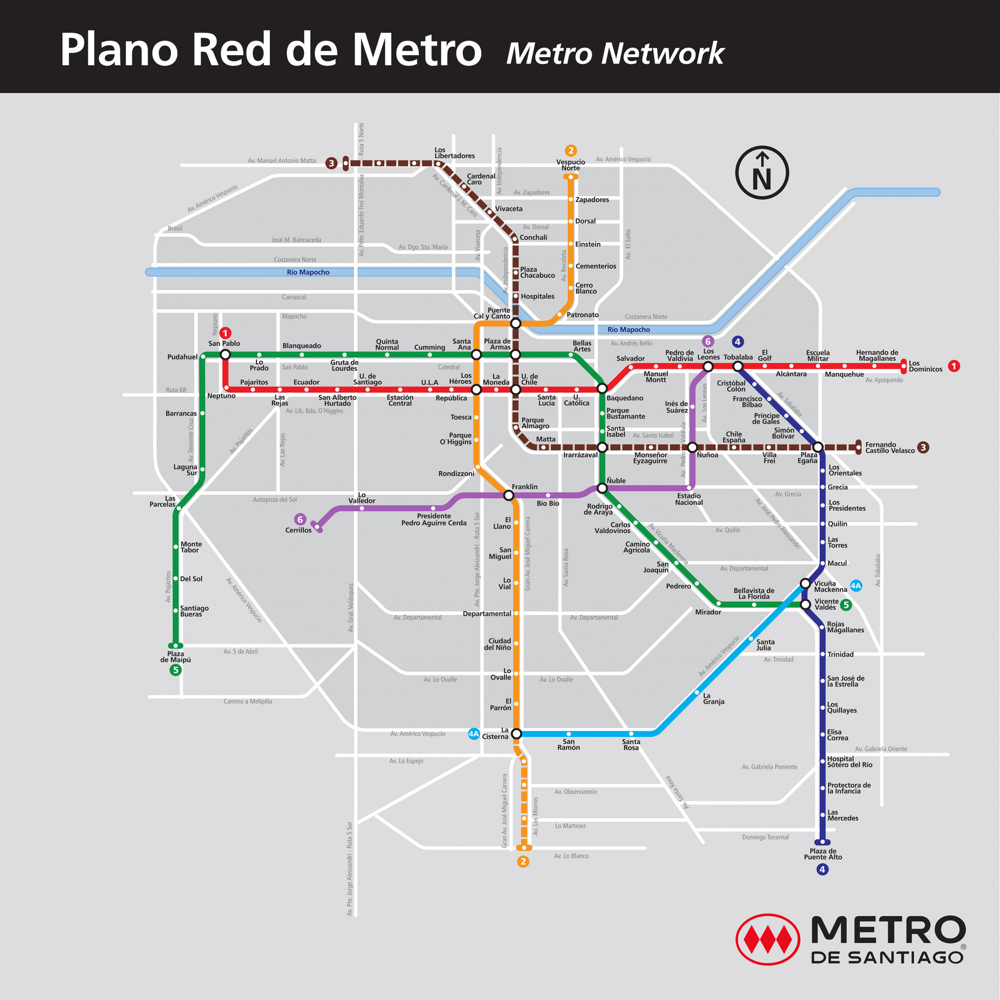

Red actual
Líneas 1 a 6
Mapa referencial de la red de Metro de Santiago.

Visualiza la red completa del Metro. En futuras versiones podrás ver el estado de cada estación directamente en el mapa.
Líneas 1 a 6
Mapa referencial de la red de Metro de Santiago.